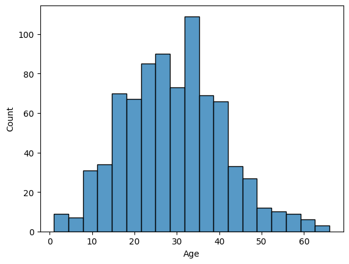
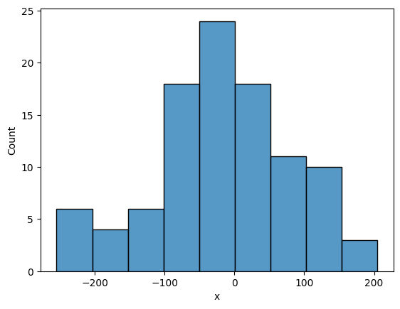
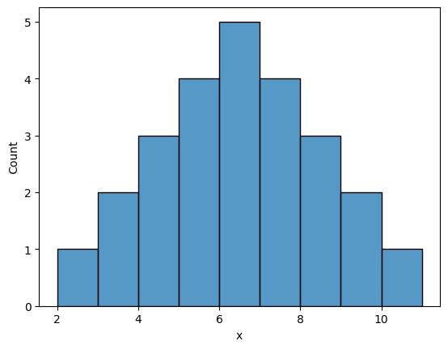

Data science and statistics
Skewness
Everything studied in this topic, rendered from the notebooks and notes themselves.
codecell 0
import pandas as pd import numpy as np import matplotlib.pyplot as plt import seaborn as sns
codecell 1
dataset = pd.read_csv("../../_shared_data/titanic_sample_1000.csv")
dataset.head(3)Output
PassengerId Survived Pclass Sex Age SibSp Parch Fare Embarked 0 1 1 2 male 21.0 0 0 40.82 S 1 2 0 3 male 17.0 1 0 10.52 S 2 3 0 3 female 23.0 1 0 12.33 S
codecell 2
sns.histplot(x="Age",data=dataset) plt.show()

Positive Skew Chart because its a greater than 0
codecell 4
dataset["Age"].skew()
Output
np.float64(0.27395018147395495)
codecell 5
dataset["Age"].mean()
Output
np.float64(29.18641975308642)
codecell 6
dataset["Age"].median()
Output
np.float64(29.0)
codecell 7
dataset["Age"].mode()[0]
Output
np.float64(22.0)
Nagative Skew Chart because its a less than 0
codecell 9
data = np.random.normal(0,100,100) data
Output
array([ 18.95289683, -144.31288137, -30.35287403, -69.51891164,
-158.63354263, -32.26305218, -71.70460909, -148.93120103,
67.90666673, -142.15635513, -128.1456843 , -38.43734711,
160.35570969, -172.05217198, 97.12878047, 15.86027903,
-81.45852647, 132.95744395, -24.99014178, -210.41324175,
-189.64725539, -104.59930187, 45.29429997, -62.78065314,
14.07932901, -14.38563901, 89.40397074, -92.01346764,
-79.98650621, 24.12583842, 134.47827244, -12.72809188,
41.65780666, 99.84999159, -2.89043457, -65.15949624,
-94.00327935, 116.45136799, 57.31756279, -45.06922776,
41.21659587, 125.41068902, -88.9503593 , 19.10745099,
-12.24524455, 97.76168031, -211.4022733 , 133.64228497,
25.8181361 , -30.41520218, -46.30856889, 95.16335484,
-8.33486982, -2.40406284, 44.75667658, -254.63515914,
-99.199408 , 122.28821017, 24.89311935, 49.92124979,
132.67891551, -26.50989418, -2.93640405, -8.4163197 ,
7.49499507, 114.06239484, -229.01568585, -24.18283317,
-52.75526189, 92.68669247, 71.65541894, -114.16773366,
-17.71970315, -51.95244166, -86.95258251, -60.30363314,
-49.69181351, -85.07316995, -48.94735438, -93.64684398,
-40.39411218, 117.00934981, 190.95792731, 47.56855925,
-152.80379112, 2.29233217, 120.26712397, 35.69274948,
-32.15738796, 30.4834169 , -214.49972589, 204.84008348,
-250.21371523, 68.57922493, -73.97465737, -94.05940043,
53.42608295, -11.71809963, 18.58744626, -45.23451881])codecell 10
df = pd.DataFrame({"x":data})
df["x"].skew()Output
np.float64(-0.21130475793713335)
#Mean Median #Mode
codecell 12
df["x"].mean(), df["x"].median(), df["x"].mode()
Output
(np.float64(6.0), np.float64(6.0), 0 6 Name: x, dtype: int64)
codecell 13
sns.histplot(x="x",data=df) plt.show()

Normal Distribution Skew
codecell 15
data1 = [2,3,3,4,4,4,5,5,5,5,6,6,6,6,6,7,7,7,7,8,8,8,9,9,10]
df = pd.DataFrame({"x":data1})
df["x"].skew()Output
np.float64(0.0)
codecell 16
sns.histplot(x="x",data=df,bins=[2,3,4,5,6,7,8,9,10,11]) plt.show()
